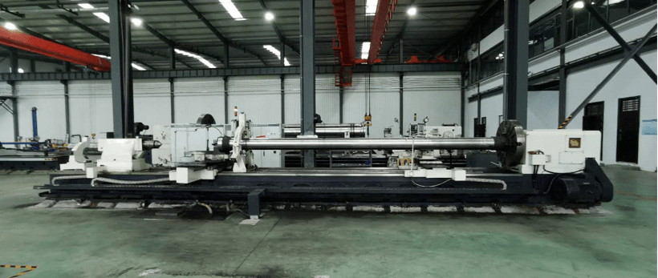

Centrifugal ductile iron pipe mould is referred as cast pipe mould, which is used in the production of centrifugal cast ductile iron pipe. It is a kind of large - scale hot - working tooling, which belongs to the consumed products in centrifugal casting industry. The cast pipe mould is always in bad working conditions in production: high-speed rotation, the outer surface is contained by cooling medium(water), the inner surface(working surface) is 1320-1400℃ hot metal adhesion. The cast pipe mould is always under the cold and heat alternating stress, tensile stress and torsion stress and other forces. How to use and maintain cast pipe mould, and succeed to the maximum potential of cast pipe mould work? Let’s find out.

Our company is special in producing centrifugal ductile iron pipe mould, Adopting the German DIN hot-work alloy tool steel standard, metallurgical standard YB/T4179-2008. We can produce the T-type water-cooled cast pipe mould of 21CrMo10 material. The product size is DN100—1200mm with the length 3-8m. The annual output of centrifugal ductile iron pipe mould with various sizes is more than 1000 pcs. The product has been sent to the domestic cast pipe manufacturers and exported to some foreign countries and regions.
1. Grinding and peening of casting pipe mould
The function of peening for casting pipe mould: it can make the inner wall of the pipe mould cold strengthened, estimate the thermal fatigue stress in the process of welding and service, and close the micro-cracks; store the casting pipe mould powder, enhance the friction force of hot metal during casting, reduce the relative slip between hot metal and pipe wall and prolong the service life of casting pipe mould.
Implementation steps: whether it is a new pipe mould and re-repair pipe mould, it must be performed peening treatment before using. The grinding for inner wall shall be performed first, and the grinding and peening must be divided into two working procedures. The peening mechanism shall not be installed when grinding and the air grinder shall be used. The pneumatic grinder shall be changed after grinding.
It is suggested that peening should be done by two times to avoid the micro-cracks.
2. Key points of using cast pipe mould
In order to increase the service life of the pipe mould, it is necessary to control the number of pull-out pipes in the first three times of using for the cold pipe mould. After the first three times of normal using, the number of pipes is gradually increased to the usual quantity according to the quality of the pipe moulds.
The appropriate normal production time of pipe mould for each time shall be 8-9 hours and the production records shall be made. The long operation time shall be strictly forbidden, and the disordered and abnormal production will cause serious damage to the service life of the pipe mould.